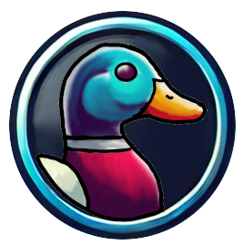

Marinas Club
Aplicativo de e-commerce destinado aos moradores do bairro onde moro. Neste aplicativo, os moradores podem oferecer produtos e serviços para outros moradores, fomentando um núcleo de economia solidária local.

Meu nome é Orlando Castro e desde sempre fui apaixonado por tecnologia. Já passei dos 50 anos de idade e, nesse tempo, tive oportunidade de aprender várias coisas legais: desde como operar os primeiros computadores com Windows 3.1, passando pelas linguagens Basic, Pascal, Visual Basic, Clipper, Java e Python, até as tecnologias mais recentes baseadas em HTML, CSS, JavaScript e Inteligência Artificial.
Sou muito curioso e estou sempre aprendendo e experimentando coisas novas, buscando aplicar esse conhecimento em projetos que gerem valor real para as pessoas ao meu redor.
Aplicativo de e-commerce destinado aos moradores do bairro onde moro. Neste aplicativo, os moradores podem oferecer produtos e serviços para outros moradores, fomentando um núcleo de economia solidária local.
Aplicativo de mensagens para celular (Android e iOS) com forte ênfase em privacidade e segurança, oferecendo comunicação protegida para usuários que valorizam a confidencialidade de seus dados.

Jogo simples para membros do grupo SketchArt no Telegram, no qual os jogadores podem usar tokens mantidos na blockchain WAX para comprar itens ingame. Acesse em: https://www.brsketch.art/duckhunt .